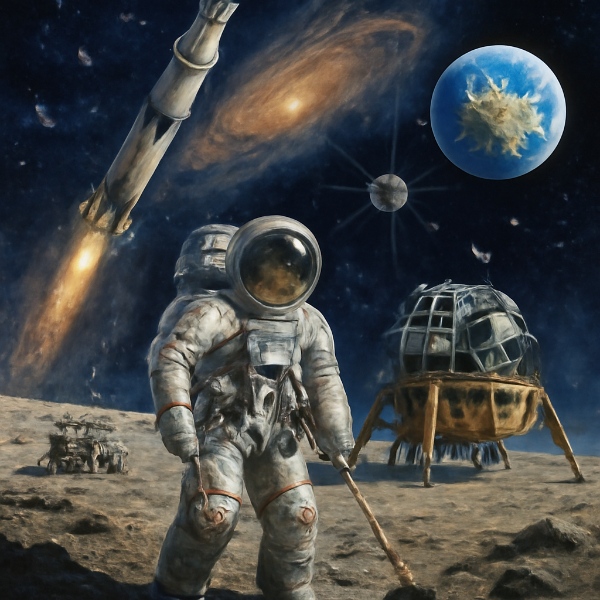
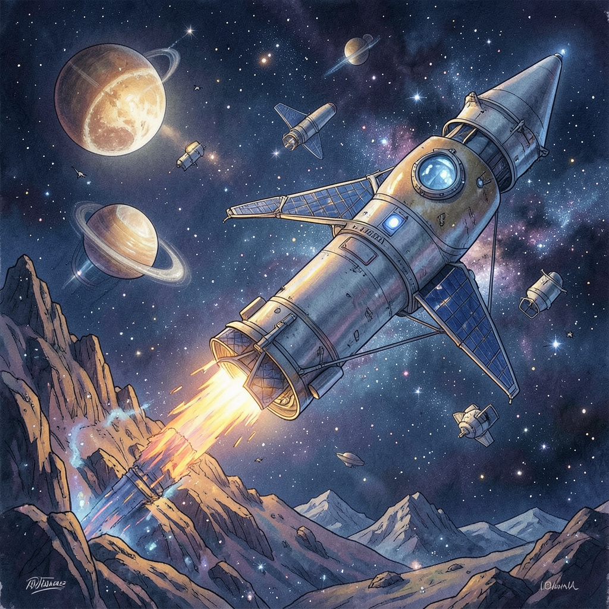
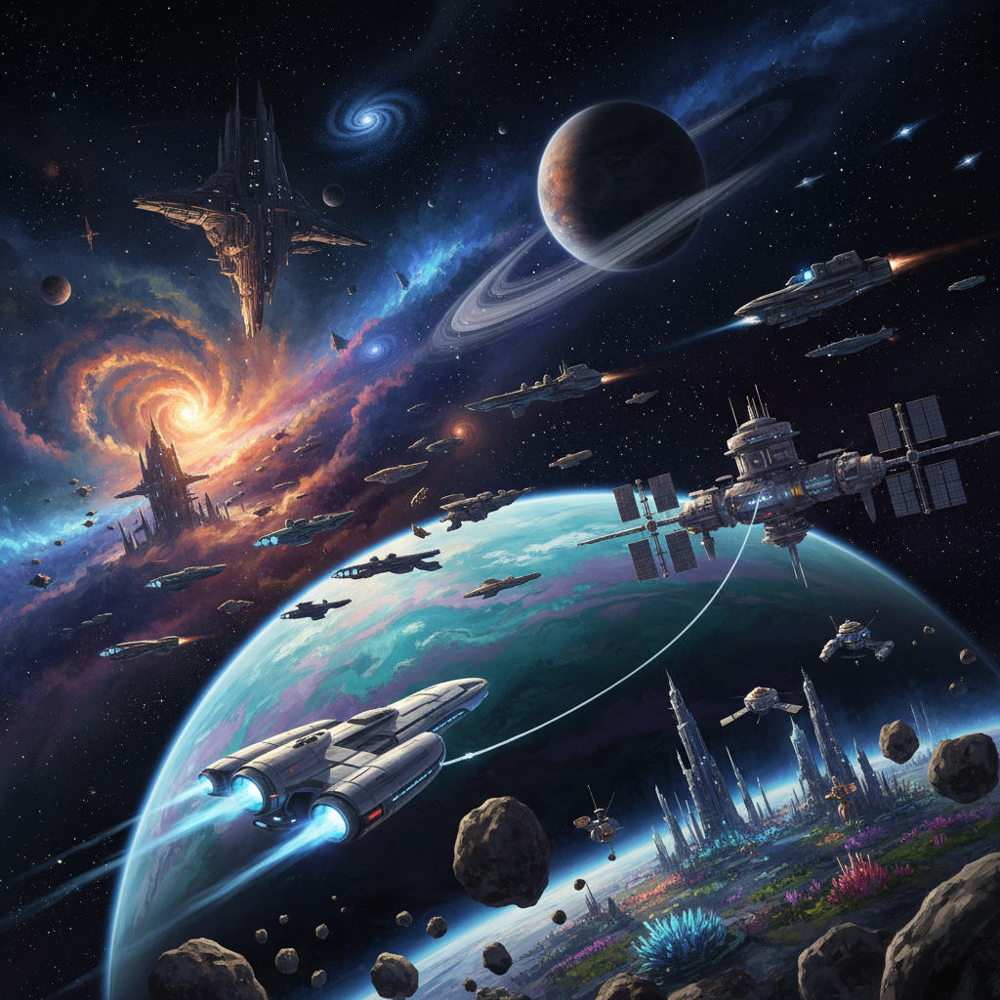
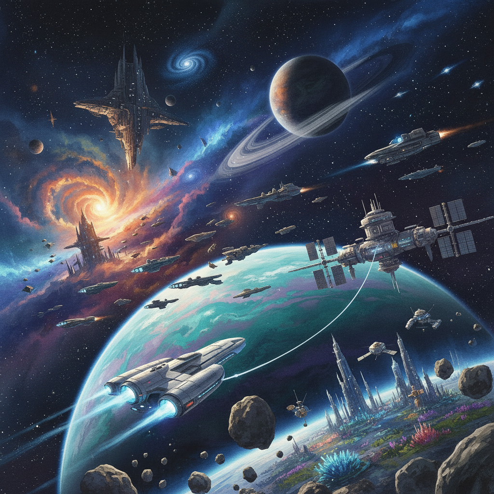
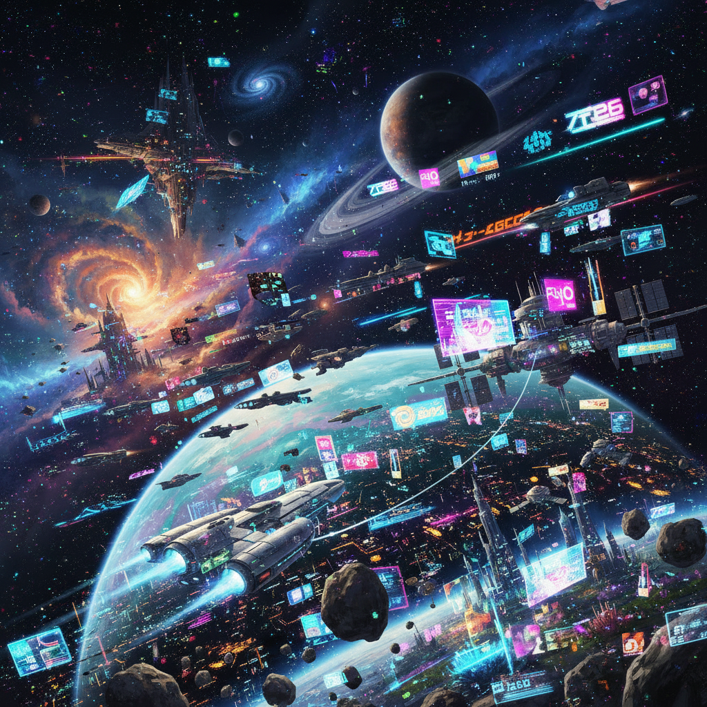

Score: 85/100 - Excellent detail and composition with a clear focus on space exploration.

Score: 70/100 - Creative depiction of a rocket but lacks detail compared to others.

Score: 90/100 - Highly imaginative and detailed representation of a futuristic space environment.

